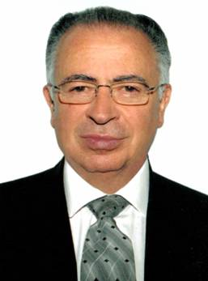

Ministro Mariano Azuela Güitrón
1952-1953. Bachiller por el Centro Universitario México incorporado a la Universidad Nacional Autónoma de México.
1954-1958. Licenciatura en Derecho en la Facultad de Derecho de la Universidad Nacional Autónoma de México.
17-junio-60. Examen Profesional de Licenciado en Derecho por la Universidad Nacional Autónoma de México, con la tesis Los grandes temas del Derecho y del Estado a la luz de la Doctrina Pontificia Contemporánea.
15-mayo-1992. Profesor Emérito de la Universidad Iberoamericana.
14-mayo-2002. Doctor en Humanidades, Honoris Causa, por la Universidad La Salle, Noroeste.
1958-1959. Funcionario en el Departamento de Consultas, Exenciones y Reconsideraciones de la Dirección del Impuesto sobre la Renta de la Secretaría de Hacienda y Crédito Público.
1958-1960. Coordinador en el Departamento de Prestaciones Sociales del Instituto Mexicano del Seguro Social.
1960-1961. Secretario Auxiliar de Estudio y Cuenta en la Segunda Sala de la Suprema Corte de Justicia de la Nación.
1961-1969. Secretario de Estudio y Cuenta de la Segunda Sala de la Suprema Corte de Justicia de la Nación, adscrito a la ponencia del Ministro Felipe Tena Ramírez.
Sep.-Oct. 1969. Secretario de Acuerdos de la Segunda Sala de la Suprema Corte de Justicia de la Nación (interino).
1969-1971. Secretario de Estudio y Cuenta de la Segunda Sala de la Suprema Corte de Justicia de la Nación, adscrito a la ponencia del Ministro Alberto Jiménez Castro.
1971-1978. Magistrado del Tribunal Fiscal de la Federación, adscrito a la Primera Sala.
1978-1983. Magistrado de la Sala Superior del Tribunal Fiscal de la Federación.
1981. Presidente del Tribunal Fiscal de la Federación.
1983-1994. Ministro de la Suprema Corte de Justicia de la Nación, adscrito a la Tercera Sala.
1987. Presidente de la Tercera Sala de la Suprema Corte de Justicia de la Nación.
Desde el 28 de enero de 1995 al 31 de diciembre de 2002. Ministro de la Suprema Corte de Justicia de la Nación, adscrito a la Segunda Sala.
1984-1993. Miembro del Comité Técnico del Fideicomiso para Promover las Publicaciones y el Estudio del Derecho Fiscal, del Tribunal Fiscal de la Federación.
1999. Representante de la Suprema Corte de Justicia de la Nación de México en el VI Encuentro de Presidentes y Magistrados de Tribunales y Salas Constitucionales en América Latina celebrado en Buenos Aires, Argentina del 16 al 20 de mayo de 1999 y presentación del caso “Valle de Bravo” como ejemplo de conflicto de poderes en el sistema constitucional.
2002. Representante de la Suprema Corte de Justicia de la Nación de México en el X Encuentro de Presidentes y Magistrados de los Tribunales Constitucionales y de las Salas Constitucionales de América Latina celebrado en Florianópolis, Brasil del 2 al 6 de junio de 2002 y presentación de la Conferencia La Suprema Corte de Justicia de México, Genuino Tribunal Constitucional.
2002. Participante en la “VII Cumbre Iberoamericana de Presidentes de Cortes Supremas y Tribunales Supremos de Justicia”. México.
Enero 2 de 2003 al 31 de diciembre de 2006. Presidente de la Suprema Corte de Justicia de la Nación y del Consejo de la Judicatura Federal.
A partir del 2 de enero de 2007. Ministro de la Suprema Corte de Justicia de la Nación, adscrito a la Segunda Sala.
2007. Representante de la Suprema Corte de Justicia de la Nación, con el Ministro Sergio Salvador Aguirre Anguiano, en el XIV Encuentro de Tribunales Constitucionales y de Salas Constitucionales de América Latina celebrado en Lima, Perú.
1958-1983 y 1993. Maestro encargado de las cátedras de Sociología, Problemas Sociales, Políticos y Económicos de México, Derecho Positivo Mexicano y Realidad Sociopolítica de México en el Centro Universitario México.
1968-1974. Catedrático en el Instituto para la Formación Integral de la Juventud.
1963-1974. Maestro titular de Sociología en el Departamento de Derecho de la Universidad Iberoamericana.
1968-1978. Maestro en los Cursos de “Promoción Femenina” y “Superación Personal” en el Banco Nacional de México.
1974-1983. Profesor de medio tiempo encargado de materias de derecho público (Garantías Individuales, Derecho Constitucional, Amparo, Derecho Fiscal, Derecho Procesal Fiscal, Derechos Humanos), del Departamento de Derecho de la Universidad Iberoamericana.
1981-2003. Profesor Numerario de la Universidad Iberoamericana.
1984-2003. Maestro en el Departamento de Derecho de la Universidad Iberoamericana, encargado de la materia “Derecho, Sociedad y Estado”.
1992. Profesor emérito del Departamento de Derecho de la Universidad Iberoamericana.
1975-2003. Miembro del Consejo Consultivo de la Revista “Jurídica” del Departamento de Derecho de la Universidad Iberoamericana.
1980-1987. Maestro de Posgrado en el Instituto Tecnológico Autónomo de México.
1980-2003, 2007 y 2008. Maestro de Posgrado en la Universidad Panamericana.
1973-2003. Miembro del Colegio Nacional de Profesores e Investigadores de Derecho Fiscal y Finanzas Públicas.
1979-1986. Miembro del Consejo Académico del Conalep.
1981-2003, 2007 y 2008. Conferencista en los Cursos de “Formación Social” de la Unión Social de Empresarios de México, A. C.
1985-2003. Miembro del Consejo Técnico de la Escuela de Derecho de la Universidad Anáhuac.
1985-1996. Miembro de la Universidad Iberoamericana, A. C.
1970-1980 y 1992-1996. Miembro del Tribunal Universitario de la Universidad Iberoamericana.
1987-1989. Miembro del Consejo Académico de la Universidad Popular Autónoma del Estado de Puebla.
1993-2003. Miembro de la Junta de Gobierno del Centro Universitario México, División de Estudios Superiores, A. C.
2008. Participante en la materia “Método del Caso” de la Licenciatura en Derecho de la Universidad Panamericana.
Conferencista en la mayoría de las universidades y centros de estudios superiores de toda la República.
1960. Los Grandes Temas del Derecho y del Estado a la Luz de la Doctrina Pontificia Contemporánea (tesis profesional).
1969. La Suprema Corte de Justicia de la Nación y el Amparo Agrario.
1977. La Reforma Política y sus Perspectivas Democráticas. Intervenciones a Título Individual.
1978. El Tribunal Fiscal de la Federación.
1978. Prólogo al libro Estudio de la Ley del Impuesto sobre la Renta, de Enrique Calvo Nicolau.
1981. Organizador y Coordinador de la Obra Tribunal Fiscal de la Federación 45 Años al Servicio de México (6 volúmenes).
1982. Prólogo al libro Derecho Fiscal de Adolfo Arrioja Vizcaíno.
1983. Hacia una Mejor Justicia (algunos aspectos).
1985. La Hacienda Municipal.
1985. Prólogo al libro Derecho Fiscal de Adolfo Arrioja Vizcaino. Arrioja Vizcaino Adolfo, Derecho Fiscal. Themis. México.
1986. Importancia, Límites y Riesgos de la Jurisprudencia.
1986. Revisión Fiscal ante la Suprema Corte de Justicia de la Nación.
1986. Coordinador de la edición de la Constitución Política de los Estados Unidos Mexicanos y comentarios a cada uno de sus artículos, elaborada por el Conalep.
1987. Las Reformas Constitucionales en Materia de Administración de Justicia.
1988. El Contencioso Administrativo, Elemento Esencial en la Justicia Mexicana en “Revista del Tribunal Fiscal de la Federación”. Agosto de 1988.
1988. La Suprema Corte y los Tribunales de lo Contencioso Administrativo.
1988. El Contencioso Administrativo, Expresión Política de Sumisión al Estado de Derecho.
1988. La Suprema Corte: Tribunal Constitucional.
1989. Algunas Consideraciones y Precisiones en torno al Instituto de la Suplencia de la Queja Deficiente.
1989. Prólogo al libro Derecho Administrativo de Germán Escobar Martínez.
1989. El Tribunal Fiscal de la Federación, en su Quincuagésimo Tercer Aniversario.
1990. La Función Social de la Empresa.
1990. La Presidencia de la República y el Poder Judicial de la Federación.
1990. El Derecho a la Jurisdicción y a la Modernidad en la Administración de Justicia.
1990. ¿Terrorismo Fiscal? Revista Señal. Junio de 1990.
1990. Palabras pronunciadas en el homenaje póstumo del Magistrado Alfonso Cortina Gutiérrez en “Revista del Tribunal Fiscal de la Federación”.
1991. La Constitucionalidad de las Contribuciones vista por la Suprema Corte.
1991. Comentarios al libro Tratado Teórico Práctico de los Recursos Administrativos del Dr. Gonzalo Armienta Hernández.
1991. Derecho, Sociedad y Estado, libro editado por la Universidad Iberoamericana.
1992. ¿Es Constitucional el Impuesto al Activo de las Empresas?, publicado en el Anuario del Departamento de Derecho de la Universidad Iberoamericana.
1992. El Estado Social de Derecho en México. La Seguridad Social y el Estado Moderno. Primera edición, México, Fondo de Cultura Económica.
1993. Prólogo al libro La Autocorrección Fiscal del Contribuyente durante la Práctica de Visitas Domiciliarias de Alejandro Ponce Rivera.
1993. ¿Los Autores deben gozar de Exención del Impuesto sobre la Renta?
1993. La Suprema Corte, Defensora de la Justicia Tributaria.
1993. Independencia y Autonomía del Poder Judicial Federal.
1993. Caducidad de la Instancia en Amparo: Institución Procesal Incongruente y Funesta.
1993. Revisión en Amparo Directo (Problema idóneo para comprender la función jurisdiccional) en “Jurídica. Anuario de la Escuela de Derecho de la Universidad Iberoamericana”.
1993. Reflexión en Torno a la Administración de Justicia, motivada por algunos hechos realizados en el primer semestre de mil novecientos noventa y tres.
1994. Reforma Constitucional de Mil Novecientos Noventa y Cuatro.
1994. Prólogo al libro Relaciones Reestrenadas entre el Estado Mexicano y las Iglesias por Teodoro Ignacio Jiménez Urresti.
1994. Prólogo al libro Ensayos Jurídicos en Materia Tributaria de Don Alfonso Cortina Gutiérrez.
1994. Importancia de la Constitucionalidad de las Leyes.
1994. Prólogo al libro Derecho Fiscal de Lic. Francisco Ponce Gómez.
1994. Prólogo del libro Jurisprudencia en Materia Fiscal de Leopoldo Rolando Arreola Ortiz, María Esther Flores Mondragón y Froylán González Sandoval.
1995. Presentación del libro Derecho Constitucional del Lic. Enrique Sánchez Bringas.
1995. Presentación del libro Tópicos Fundacionales del Lic. Fernando Castro y Castro.
1995. Educar para la Democracia, la Libertad y la Justicia.
1995. Breves Consideraciones en Torno a Posibles Modificaciones al Sistema de Administración de Justicia en México.
1995. El Derecho de Familia y la Libertad Religiosa.
1996. Concepto y Evolución del Estado de Derecho.
1996. La Integración del Poder Judicial al Régimen Jurídico de los Ministros y del Consejo de la Judicatura Federal.
1996. Prólogo al libro Derecho Fiscal de Adolfo Arrioja Vizcaíno.
1997. Revisión Administrativa, Garantía Personal y Social Frente a Resoluciones Trascendentes.
2000. ¿Se transforma la Suprema Corte de Justicia de la Nación?. Once voces.
2000. La Suprema Corte de Justicia de la Nación no pretende controlar al Poder Judicial. Once voces.
2001. Compilador de la Obra Azuela vs Azuela, editada por el Instituto Mexicano de Doctrina Social Cristiana.
2002. Coautor del libro La Suprema Corte de Justicia y el Derecho a la Vida. Sentencia sobre el Aborto.
2007. Compilador de la Obra Azuela vs Azuela, tercera edición, editada por el Instituto Mexicano de Doctrina Social Cristiana.
2008. Prólogo al libro Derecho Fiscal de Adolfo Arrioja Vizcaíno, vigésima edición.
Mención Honorífica al terminar los estudios requeridos para obtener el grado de Bachiller en el Centro Universitario México (18 de noviembre de 1953).
Diploma de Segundo Lugar por Altas Calificaciones en la Carrera de Licenciado en Derecho de la Facultad de Derecho de la Universidad Nacional Autónoma de México (diciembre de 1955).
Diploma de Primer Lugar por Altas Calificaciones en la Carrera de Licenciado en Derecho de la Universidad Nacional Autónoma de México (diciembre de 1956).
Diploma de Tercer Lugar por Altas Calificaciones en la Carrera de Derecho en la Facultad de Derecho de la Universidad Nacional Autónoma de México (diciembre de 1957).
Diploma de Primer Lugar por Altas Calificaciones en la Carrera de Derecho en la Facultad de Derecho de la Universidad Nacional Autónoma de México (diciembre de 1958).
Diploma y Medalla de Mejor Pasante en la Carrera de Licenciado en Derecho de la Facultad de Derecho de la Universidad Nacional Autónoma de México (noviembre de 1959).
Mención Honorífica por el Examen Profesional sustentado para obtener el título de Licenciatura en la Facultad de Derecho de la Universidad Nacional Autónoma de México (9 de julio de 1960).
Diploma de la Comunidad Escolar del Instituto Miguel Ángel por su aportación en favor del Desarrollo Integral de la Familia Cristiana (25 de febrero de 1970).
Diploma del Colegio de Secretarios de la Suprema Corte de Justicia de la Nación, A. C. en reconocimiento a la labor desarrollada como iniciador y primer presidente de ese colegio (5 de noviembre de 1973).
Diploma del Colegio de Secretarios de la Suprema Corte de Justicia de la Nación, A. C. como Miembro Fundador de esa asociación (27 de septiembre de 1974).
Diploma de la Asociación Nacional de Abogados de Empresa, A. C. en reconocimiento a su participación en el evento “Análisis de la Nueva Ley Orgánica del Tribunal Fiscal de la Federación” (13 de abril de 1978).
Diploma de la Academia Nacional de Derecho Fiscal del Colegio Mexicano de Abogados como Miembro Fundador Honorario de la Academia (marzo de 1979).
Diploma de la Universidad Panamericana como expositor de la “Especialidad en Derecho Fiscal” (15 de diciembre de 1979).
Diploma de la Universidad Autónoma de Querétaro y de la Sociedad de Alumnos de la Escuela de Derecho por su participación como ponente en el “Primer Curso sobre Administración Pública” (febrero de 1981).
Diploma de la Escuela de Derecho y Ciencias Sociales de la Universidad de Sonora como reconocimiento a su colaboración en la superación cultural de su institución docente (junio de 1981).
Diploma de la Asociación Nacional de Abogados de Empresa, A. C. en reconocimiento a su participación en el evento “III Simposio Fiscal” (23 de junio 1981).
Diploma del Club Rotario Chapultepec por su participación con el tema “El Tribunal Fiscal de la Federación” (agosto de 1981).
Diploma de la Academia de Derecho Fiscal de Puebla, A. C. en el primer aniversario de la asociación por la colaboración prestada a la institución (28 de agosto de 1981).
Diploma de la Confederación Patronal de la República Mexicana por su aportación académica como expositor en la “I Mesa Redonda sobre Derecho de Amparo” (23 de octubre de 1981).
Diploma de la Universidad de Guanajuato y de la Escuela de Derecho por su participación en el “Seminario Sobre el Control de la Legalidad en Materia Administrativa” (noviembre de 1981).
Diploma del Colegio de Abogados “Lic. Clemente Vizcarra Franco, A. C.” de Culiacán, Sinaloa, en reconocimiento por su participación en el Curso de “Derecho Fiscal” (20 de marzo de 1982).
Diploma de la Facultad de Derecho y Ciencias Sociales de la Universidad Autónoma de Nuevo León por su participación como conferenciante huésped (19 de abril de 1982).
Diploma de la Jefatura de Servicios Legales del Instituto Mexicano del Seguro Social por su participación en el “Coloquio Sobre el Nuevo Código Fiscal de la Federación” (agosto de 1982).
Diploma de la Sala Regional Hidalgo-México del Tribunal Fiscal de la Federación, por su participación en el Ciclo de Conferencias con motivo de su primer aniversario (abril de 1983).
Diploma de la Asociación Nacional de Abogados de Empresa, A. C. por su participación en el “Simposio Fiscal 1983” (abril de 1983).
Diploma del Colegio Nacional de Secretarios del Tribunal Fiscal de la Federación, A. C. por su trayectoria como jurista y por su designación como Ministro de la Suprema Corte de Justicia de la Nación (junio de 1983).
Diploma del Consejo de Alumnos del Departamento de Derecho de la Universidad Iberoamericana por su participación en la Semana “El Derecho Fiscal. Diversos Enfoques y Perspectivas” (agosto de 1983).
Diploma al Mérito Universitario de la Universidad Iberoamericana en reconocimiento a sus 15 años de labor académica (23 de septiembre de 1983).
Diploma del Colegio Nacional de Profesores e Investigadores de Derecho Fiscal y Finanzas Públicas, A. C. que lo acredita como Asociado Numerario, por sus méritos docentes y académicos (14 de octubre de 1983).
Diploma del Centro de Difusión y Extensión Universitarias de la Universidad Iberoamericana por haber impartido el curso “Estructura Jurídica Tributaria” (5 de julio de 1984).
Diploma de la Universidad Autónoma de Guadalajara por su participación en el “IX Congreso del Colegio Nacional de Profesores e Investigadores de Derecho Fiscal y Finanzas Públicas, A. C.” (13 de octubre de 1984).
Diploma del Colegio de Abogados de La Laguna en Reconocimiento por su participación en el Ciclo de Conferencias Celebrado con Motivo del “Día del Abogado” (julio de 1985).
Diploma del ilustre Colegio de Abogados del Estado de Puebla, A. C. por su participación en el Ciclo de Conferencias Mes del Derecho en el Estado de Puebla (mayo de 1986).
Diploma del Tribunal Fiscal de la Federación en su Quincuagésimo Aniversario por su gestión como Magistrado (27 de agosto de 1986).
Diploma del Tribunal Fiscal de la Federación por su participación como ponente en el Congreso Conmemorativo de su Quincuagésimo Aniversario (27 de agosto de 1986).
Diploma del Tribunal Fiscal de la Federación por haber sido Miembro del Jurado Calificador de las Tesis de Maestría y Doctorado del Segundo Certamen “Premio de la Revista del Tribunal Fiscal de la Federación” (27 de agosto de 1986).
Diploma de la Asociación Mexicana de Promoción y Cultura Social, A. C. por su participación al frente de la Comisión Académica del Instituto Mexicano de Doctrina Social Cristiana (30 de septiembre de 1986).
Diploma de la Universidad Autónoma de Tlaxcala por su participación en el “Congreso Nacional de Profesores e Investigadores de Derecho Fiscal y Finanzas Públicas” (octubre de 1986).
Diploma de la Universidad de Sinaloa y del Colegio de Abogados Clemente Vizcarra Franco, A. C. por su participación como catedrático del curso Diplomado de “Derecho Fiscal” (18 de diciembre de 1986).
Diploma del Colegio Nacional de Profesores e Investigadores de Derecho Fiscal y Finanzas Públicas, A. C. por su participación como expositor en el “XII Congreso Nacional” (1o. de noviembre de 1987).
Diploma de la Universidad Tepeyac, A. C. por su participación como ponente de la “Séptima Semana Jurídica” (13 de noviembre de 1987).
Diploma de la Universidad del Valle de México, Plantel Tlalpan, por su participación en el Ciclo de Conferencias Reformas Fiscales de 1988 (18 de abril de 1988).
Diploma del Colegio de Secretarios de la Suprema Corte de Justicia de la Nación, A. C. por su participación en el “Curso de Actualización de Amparo 1988” (1988).
Diploma del Tribunal Fiscal de la Federación por su participación como Miembro del Jurado Calificador en el “Segundo Certamen Premio de la Revista del Tribunal Fiscal de la Federación para Tesis Doctorales” (agosto de 1988).
Diploma del Tribunal Fiscal de la Federación por su participación como conferencista en el evento sobre “Justicia Administrativa” en su Quincuagésimo Segundo Aniversario (agosto de 1988).
Diploma de la Universidad Nacional Autónoma de México, Escuela Nacional de Estudios Profesionales Acatlán, División de Ciencias Jurídicas por la impartición de la Conferencia La Reforma Constitucional en Materia de Amparo y la Suprema Corte de Justicia (22 de agosto de 1988).
Diploma del Tribunal Fiscal de la Federación por su labor como Presidente del mismo en el año de 1981, con motivo del Quincuagésimo Tercer aniversario de la expedición de la Ley de Justicia Fiscal (27 de agosto de 1989).
Diploma de la Universidad de Sonora y de la Escuela de Derecho y Ciencias Sociales por su trayectoria en la administración de justicia y el apoyo a la función académica de esa escuela como conferencista (27 de marzo de 1990).
Diploma de la Federación Nacional de la Asociación de Colegios de Contadores Públicos, A. C. y el Colegio de Licenciados en Contaduría Pública de Jalisco, A. C. por su participación como expositor en el “Congreso Nacional Fiscal” (3 de abril de 1990).
Diploma del Poder Judicial de Yucatán por su intervención en el “Programa de Actualización en Amparo” (27 de abril de 1990).
Diploma de la Universidad Popular Autónoma del Estado de Puebla por su participación con la Conferencia ¿La Justicia Federal, Fuente de Inseguridad? (18 de mayo de 1990).
Diploma de la Academia Chihuahuense de Estudios Fiscales por su participación como expositor en el “Simposium Fiscal” (8 de junio de 1990).
Diploma del Gobierno del Estado de Puebla por su participación en el Ciclo de Conferencias de Temas Actuales sobre Amparo (7 de septiembre de 1990).
Diploma de la Universidad Anáhuac por su participación como expositor en la “XI Semana de Derecho” (22 de octubre de 1990).
Diploma del Colegio de Secretarios de la Suprema Corte de Justicia de la Nación, A. C. por su participación como fundador de ese colegio, así como de la integración de su Primera Mesa Directiva (5 de diciembre de 1990).
Diploma de la Asociación Nacional de Abogados de Empresa, A. C. por su participación en el evento “La Constitucionalidad de las Contribuciones y la Suprema Corte de Justicia de la Nación” (16 de abril de 1991).
Diploma de la Escuela de Derecho del Instituto Tecnológico de Estudios Superiores de Occidente por la impartición de la conferencia La Jurisprudencia, Instrumento de Justicia y Seguridad Jurídica (28 de abril de 1991).
Diploma del Tribunal de lo Contencioso Administrativo del Distrito Federal por su participación en el ciclo de conferencias organizado con motivo de su Vigésimo Aniversario (17 de julio de 1991).
Diploma del Tribunal Fiscal de la Federación en su Quincuagésimo Quinto Aniversario por su asistencia y participación (27 de agosto de 1991).
Diploma de la Sociedad de Alumnos de la Escuela Libre de Derecho de Nuevo León por su colaboración como expositor en el Simposio “La Reestructuración de la Justicia en México” (septiembre de 1991).
Diploma del Tribunal de lo Contencioso Administrativo del Estado de Guerrero por su participación en el Ciclo de Conferencias de su IV Aniversario (31 de octubre de 1991).
Diploma de la Universidad de las Américas de Puebla por su participación como expositor en la “Tercera Semana de Derecho” (marzo de 1992).
Diploma de la Escuela Libre de Derecho de Puebla, A. C. y de su Sociedad de Alumnos por su participación como expositor en la “Quinta Semana del Derecho” (11 de mayo de 1992).
Diploma del Tribunal de lo Contencioso Administrativo del Estado de Guerrero como “Jurisconsulto Distinguido” y Promotor de la Justicia Administrativa en el Estado de Guerrero (15 de octubre de 1992).
Diploma del Tribunal de lo Contencioso Administrativo del Estado de Guerrero por su participación como ponente en el Ciclo de Conferencias organizado con motivo de su V Aniversario (15 de octubre de 1992).
Diploma de la Suprema Corte de Justicia de la Nación por la perseverancia en sus servicios al Poder Judicial de la Federación durante 20 años (diciembre de 1992).
Diploma de la Universidad de Sonora por su participación como organizador y expositor del Curso “Introducción al Poder Judicial Federal” (11 de diciembre de 1992).
Diploma del Departamento de Derecho de la Universidad Iberoamericana, Plantel Santa Fe por su participación en el panel “Soberanía y Derechos Humanos” (29 de enero de 1993).
Diploma de la Escuela de Derecho del Instituto Tecnológico de Estudios Superiores de Occidente por haber impartido la conferencia Las Funciones Jurisdiccionales de la Suprema Corte (12 de febrero de 1993).
Diploma de la Casa de la Cultura de Reynosa, por su participación con el tema Humanismo en la Educación en el “Programa de Fomento a la Cultura Ecológica” (19 de febrero de 1993).
Diploma de la Escuela Internacional, S. C. por su participación en la “II Semana Cultural y de Orientación Vocacional” (22 de febrero de 1993).
Diploma de la Universidad Iberoamericana, Plantel Golfo Centro por su participación como ponente del tema El Profesionista del Derecho al que aspira la Universidad Iberoamericana (17 de abril de 1993).
Diploma de la Universidad Anáhuac del Sur por su apoyo al “Programa de Visitas dirigido a estudiantes norteamericanos” (23 de julio de 1993).
Diploma de la Universidad Isidro Fabela de Toluca, S. C. por su participación en la conferencia Amparo contra Leyes (1o. de octubre de 1993).
Diploma de la Procuraduría Federal del Consumidor por su participación como conferencista en el ciclo “El Mes de la Actualización Jurídica” (26 de octubre de 1993).
Diploma de la Universidad La Salle por su exposición dentro de la “X Semana Jurídica” (27 de octubre de 1993).
Diploma del Tribunal Superior de Justicia del Estado de Tlaxcala por su conferencia a los servidores de ese poder y al Foro Tlaxcalteca (11 de noviembre de 1993).
Diploma de la Asociación de Abogados del Valle de México, Colegio de Abogados de Tlaxcala, por su intervención en el ciclo de conferencias Presente y Futuro del Acceso a la Justicia (diciembre de 1993).
Diploma de la Universidad Iberoamericana, Plantel Noroeste por su participación como expositor en la conferencia Transformación al Sistema de Administración de Justicia (26 de enero de 1994).
Diploma de la Universidad Iberoamericana, Plantel Noroeste por su participación como expositor en la conferencia Derecho, Sociedad y Estado, Apoyo en la Formación del Hombre y del Jurista (27 de enero de 1994).
Diploma del Club Rotario Chapultepec por su participación como orador (23 de febrero de 1994).
Diploma de la Academia de Derecho Fiscal del Estado de Guanajuato, A. C. designándolo Miembro Honorario (marzo de 1994).
Diploma de la Academia de Derecho Fiscal del Estado de Guanajuato, A. C. por la conferencia La Suprema Corte de Justicia de la Nación y las Contribuciones (18 de marzo de 1994).
Diploma del Tribunal de lo Contencioso Administrativo del Estado de San Luis Potosí por su participación como conferencista en el “Primer Curso Monográfico sobre Justicia Administrativa” (marzo de 1994).
Diploma del Departamento de Derecho del Instituto Tecnológico y de Estudios Superiores de Occidente por su participación como ponente en la “VI Semana de Derecho” (25 de marzo de 1994).
Diploma de la Universidad Olmeca de Tabasco por haber impartido la Conferencia La Formación del Abogado en México (22 de abril de 1994).
Diploma de la Facultad de Derecho y Ciencias Sociales de la Universidad Autónoma Benito Juárez de Oaxaca, por su participación con el tema Transformación Substancial en el Sistema de Administración de Justicia (28 de abril de 1994).
Diploma de la Universidad Regional del Suroeste de Oaxaca, por su participación como ponente del tema Constitucionalidad de Leyes (29 de abril de 1994).
Diploma del Colegio de Notarios Públicos de Culiacán, Sinaloa por su participación con la conferencia ¿Transformación Sustancial del Sistema de Administración de Justicia? (10 de junio de 1994).
Diploma de la Universidad Iberoamericana, Plantel Laguna, por su participación con la conferencia La Impartición de Justicia (26 de agosto de 1994).
Diploma del Club Rotario Chapultepec por su participación con el tema Perspectivas del Nuevo Gobierno (16 de noviembre de 1994).
Diploma de Reconocimiento Académico del Instituto de Estudios Constitucionales del Estado de Querétaro por su valiosa contribución para difundir la obra Constitución y Sociedad en la Formación del Estado de Querétaro (septiembre de 1997).
Diploma del Tribunal de lo Contencioso Administrativo del Estado de Guanajuato por su valiosa participación en la celebración de la Conferencia Magistral Prospectivas de la Justicia Administrativa en México (11 de septiembre de 1997).
Diploma de la Universidad Nacional Autónoma de México, Facultad de Derecho a través de la División de Educación Continua, y del Gobierno del Estado de Hidalgo por su participación como expositor en el Diplomado “El Juicio de Amparo” (18 de octubre de 1997).
Diploma del Tribunal Federal de Conciliación y Arbitraje por haber contribuido a enriquecer el Ciclo de Conferencias sobre el Plan Nacional de Desarrollo 1995-2000 a Mitad del Sexenio al disertar en Conferencia Magistral con el tema La Justicia (20 de octubre de 1997).
Diploma de Reconocimiento del Instituto Tecnológico de Estudios Superiores de Monterrey, por su valiosa participación como conferencista en el “IX Simposium Nacional de Derecho” con el tema La Realidad Jurídica Mexicana: Un Enfoque Integral (octubre de 1997).
Diploma del Colegio de Abogados de Yucatán, A. C. por su magistral exposición del tema La Coparticipación del Abogado en la Impartición de Justicia (1o. de noviembre de 1997).
Diploma de la Suprema Corte de Justicia de la Nación por la perseverancia en sus servicios al Poder Judicial de la Federación durante 25 años (diciembre de 1997).
Diploma de la Facultad de Derecho de la Universidad Autónoma de Querétaro por su excelente ponencia La Jurisprudencia en el Primer Congreso Nacional de Estudiantes de Derecho (2 de abril de 1998).
Diploma de la Universidad La Salle, Campus Cuernavaca, por su magistral conferencia La Suprema Corte de Justicia de la Nación y el Estudiante de Derecho (22 de mayo de 1998).
Diploma de la Asociación de Magistrados de Tribunales de lo Contencioso Administrativo de los Estados Unidos Mexicanos, A. C. y del Tribunal de lo Contencioso Administrativo del Estado de Sinaloa, por su destacada participación como conferencista disertando sobre el tema Contencioso Administrativo ¿Jurisdicción autónoma o dependiente del Poder Judicial? (29 de mayo de 1998).
Diploma de la Universidad de Estudios de Posgrado en Derecho como Maestro honorario (mayo de 1998).
Diploma de la Universidad Nacional Autónoma de México, Facultad de Derecho a través de la División de Educación Continua y el Colegio de Magistrados y Jueces del Poder Judicial de la Federación, por su valiosa participación como expositor en el Diplomado intitulado “El Juicio de Amparo” celebrado de abril a septiembre de 1998 (26 de septiembre de 1998).
Diploma del Club Universitario por su participación como conferencista con el tema La elección del nuevo Presidente de la Suprema Corte (1o. de febrero de 1999).
Diploma de USEM México por su participación en el Curso “CUFOSO” con el tema La libertad (3 de marzo de 1999).
Diploma de USEM México por su participación en el Curso “CUFOSO” con el tema La autoridad (17 de marzo de 1999).
Diploma de la Universidad Autónoma de Tlaxcala por su Conferencia Magistral Hacia la Impartición de Justicia del Siglo XXI dentro del Segundo Diplomado en Amparo (20 de marzo de 1999).
Diploma de la Unión Social de Empresarios, Valle de Toluca por su brillante exposición Justicia (15 de abril de 1999).
Diploma de la Universidad Iberoamericana, Campus Laguna, por su participación como expositor en el “IV Simposium de Derecho” con el tema Misión del Abogado Humanista en un Mundo Globalizado (28 de abril de 1999).
Diploma de la Universidad Autónoma de Yucatán, Facultad de Derecho por su distinguida participación en el “III Foro Peninsular de Derecho Manuel Crescencio Rejón y Alcalá, Bicentenario de su Natalicio (1799-1999)”, dictando la conferencia La Revisión ante la Suprema Corte de Justicia en el Amparo Directo (mayo de 1999).
Diploma de reconocimiento de la Unión Social de Empresarios Mexicanos, Valle de Toluca, por su brillante exposición Estado y Política (17 de junio de 1999).
Diploma por su participación en el Ciclo de Conferencias Magistrales del Consejo de la Judicatura, durante el verano de 1999 con el tema Cultura Jurisdiccional (24 de junio de 1999).
Diploma de reconocimiento otorgado por Fundación Mexicana para la Promoción de la Economía Solidaria, A. C. por su solidaridad e invaluable apoyo como socio fundador (30 de junio de 1999).
Reconocimiento por su participación en la Universidad Autónoma de Hidalgo con la Conferencia Cultura Jurisdiccional (7 de julio de 1999).
Diploma por la participación en el “I Simposium sobre las tendencias actuales del Derecho Constitucional y Filosofía del Derecho” con la ponencia La Integración Judicial de Lobbying y Cabildeo de México, S. C. (26 de julio de 1999).
Diploma de reconocimiento por su participación como instructor en el “Diplomado de Amparo”, en la Universidad del Valle de México, Campus Lomas Verdes (30 de julio de 1999).
Diploma de reconocimiento por su Conferencia Magistral El Cumplimiento de la Sentencia de Amparo, otorgado por los Magistrados y Jueces de Distrito del Décimo Segundo Circuito del Poder Judicial de la Federación (11 de agosto de 1999).
Participación en el Curso de Formación Social (UNITEC) con el tema La autoridad (18 de agosto de 1999).
Reconocimiento de la Generación 1999 y la Coordinación del Instituto de la Judicatura Federal (extensión Tamaulipas) por su participación en el “IV Ciclo de Conferencias como Homenaje al 150 Aniversario del Dictado de la Primera Sentencia de Amparo”, con el tema El Cumplimiento de la Ejecutoria de Amparo (20 de agosto de 1999).
Diploma de reconocimiento del Consejo de la Judicatura del Estado de México por su participación en el Instituto de Capacitación y Especialización Judicial de ese Estado con la Conferencia Hacia la Justicia del Siglo XXI (9 de septiembre de 1999).
Diploma de reconocimiento como Huésped Distinguido otorgado por el gobernador del Estado de Zacatecas, Lic. Ricardo Monreal Ávila durante su visita a esa ciudad (octubre de 1999).
Diploma de la Fundación Universidad de las Américas-Puebla y la Escuela de Ciencias Sociales como reconocimiento de la conferencia Siglo XXI y el Profesionista de Ciencias Sociales (20 de octubre de 1999).
Participación en el Curso de Formación Social para Dirigentes de Empresa, USEM México con el tema La autoridad (27 de octubre de 1999).
Participación en el Aniversario del Jubileo Profesional del Lic. Fernando Castro y Castro (4 de noviembre de 1999).
Participación en el Tribunal Superior de Justicia del Distrito Federal y el Consejo de la Judicatura del Distrito Federal con el tema Hacia la Administración de Justicia del Siglo XXI (18 de noviembre de 1999).
Participación en el Curso de posgrado en Amparo con el tema La Jurisprudencia en la Universidad Panamericana (9, 14 y 16 de diciembre de 1999).
Reconocimiento de la Universidad Autónoma Metropolitana de Estudiantes de Derecho por su participación en el Diplomado “El Juicio de Amparo en el Sistema Jurídico Mexicano” (15 de enero de 2000).
Reconocimiento de la Facultad de Derecho de la Universidad Autónoma del Estado de México por sus comentarios en la presentación del libro El Amparo Penal Indirecto del Dr. Ricardo Ojeda Bohórquez (28 de enero de 2000).
Conferencia Magistral sobre La Ética del Juez para el Instituto Latinoamericano de Comunicación Educativa, vía Edusat en el Curso Propedéutico “Especialización en materia procesal fiscal”, impartido por el Instituto de Estudios sobre Justicia Adminisrativa del Tribunal Federal de Justicia Fiscal y Administrativa (año 2000).
Conferencia Magistral durante el Curso de “Formación Judicial Electoral”, organizado por las autoridades nacionales electorales de España y las autoridades electorales federales de México, con el patrocinio del Programa de las Naciones Unidas para el Desarrollo y la Agencia Española de Cooperación Internacional. Sala Superior del Tribunal Electoral del Poder Judicial de la Federación (28 de abril de 2000).
Diploma de reconocimiento de la Universidad Marista, Escuela de Derecho de Mérida, Yucatán por haber participado como expositor de la Conferencia El Poder Judicial de la Federación y el Estudiante de Derecho realizada dentro de la “V Jornada Universitaria Marista” de la Escuela de Derecho (25 de mayo de 2000).
Conferencia Magistral sobre el tema Jurisprudencia durante el posgrado de especialización en Amparo que llevó a cabo el Instituto de Administración Pública del Estado de Jalisco (23 y 24 de junio de 2000).
Diploma de reconocimiento por la Conferencia Magistral Validez actual del Contencioso Administrativo en México, en la IX Reunión Anual de Magistrados con motivo del LXIV Aniversario del Tribunal Fiscal de la Federación (28 de agosto de 2000).
Reconocimiento del Instituto de la Judicatura Federal, extensión Nuevo León, en su X Aniversario, por su participación en el Ciclo de Conferencias Magistrales con el tema Las Controversias Constitucionales y las Acciones de Inconstitucionalidad (22 de septiembre de 2000).
Diploma de la División de Educación Continua de la Facultad de Derecho de la Universidad Nacional Autónoma de México como expositor en el diplomado intitulado “Dinámica del Amparo” celebrado del 25 de marzo al 6 de octubre del 2000.
Conferencia Magistral durante el “Congreso Nacional de Juristas para analizar la propuesta de una nueva Ley de Amparo”, realizado en la ciudad de Mérida, Yucatán (octubre de 2000).
Reconocimiento del Colegio de Secretarios de la Suprema Corte de Justicia de la Nación, A. C. por su participación en el “Primer Seminario de Derecho Procesal Constitucional” (octubre de 2000).
Conferencias Magistrales tituladas La libertad y La autoridad en el Curso de “Formación Social” organizado por la Unión Social de Empresarios Mexicanos, México (23 de enero de 2001).
Maestro Honorífico del Departamento de Derecho y Ciencias Políticas de la Universidad Popular Autónoma del Estado de Puebla (6 de septiembre de 2001).
Participación en la Celebración del Cincuentenario del Departamento de Derecho de la Universidad Iberoamericana, A. C. con la conferencia titulada La Jurisprudencia (enero 2002).
Participación durante el Tercer Congreso Internacional de Derecho, realizado en la Universidad de las Américas, Puebla, con la conferencia titulada Sentencia Histórica de la Suprema Corte de Justicia de la Nación ¿Aborto Sí? ¿Aborto No? (marzo 2002).
Diploma del Instituto Tecnológico y de Estudios Superiores de Occidente por la Conferencia Magistral El Control del Poder, Una Cuestión de Justicia (abril 2002).
Reconocimiento del Tribunal Superior de Justicia y el Consejo de la Judicatura del Estado de México por su Conferencia Magistral El Cumplimiento de las Sentencias de Amparo (abril 2002).
Diploma de la Asociación Nacional de Magistrados de Circuito y Jueces de Distrito del Poder Judicial de la Federación y del Instituto de la Judicatura por su participación como expositor en el Seminario “La Justicia Federal en la Actualidad” (2 de mayo de 2002).
Reconocimiento del Tribunal de lo Contencioso Administrativo del Estado de Sinaloa por la Conferencia sobre Destino de la Justicia Administrativa en México (3 y 4 de mayo de 2002).
Doctorado en Humanidades. Honoris Causa, otorgado por la Universidad La Salle del Noroeste (14 de mayo de 2002).
Reconocimiento de la Federación de Organismos Públicos de Derechos Humanos y de la Comisión Estatal de Derechos Humanos de Morelos por su participación en el “XVIII Congreso Nacional” (23 de mayo de 2002).
Participación en el “X Encuentro de Presidentes y Magistrados de los Tribunales Constitucionales y de las Salas Constitucionales de América Latina”. La Suprema Corte de Justicia de México. Genuino Tribunal Constitucional (junio de 2002).
Reconocimiento de la Universidad Nacional Autónoma de México. ENEP Acatlán. División de Ciencias Jurídicas, por su participación como ponente en la Conferencia Importancia y Trascendencia de la Jurisprudencia (26 de junio de 2002).
Diploma de la Secretaría de Contraloría y Desarrollo Administrativo por su Conferencia La Ética y la Responsabilidad de los Servidores Públicos (10 de septiembre de 2002).
Reconocimiento del Tribunal Superior de Justicia del Distrito Federal por su participación como ponente en el “XII Ciclo de Conferencias de Actualización Judicial 2002” en el Tema Sentencia Histórica de la Suprema Corte ¿Aborto Sí? ¿Aborto No? (17 de septiembre de 2002).
Participación en el “VII Congreso Latinoamericano de Exalumnos Maristas” (5 de noviembre de 2002).
Diploma por Treinta Años de Servicio en el Poder Judicial de la Federación (noviembre de 2002).
Conferencia La Corte Actual en el marco de la Cuarta Reunión de Trabajo de la Unión Social de Empresarios de México, A.C. (USEM) (9 de abril de 2003).
Conferencia La ética judicial en el marco del “Primer Curso Iberoamericano sobre Justicia Electoral” (Buenos Aires, Argentina, 15 de mayo de 2003).
Ciclo de mesas redondas con motivo del 8o. Aniversario de la Fundación del Consejo de la Judicatura Federal, en el Instituto de Investigaciones Jurídicas de las Universidad Nacional Autónoma de México (26 de mayo de 2003).
Conferencia Caso práctico acción de inconstitucionalidad 30/2001 y su acumulada 31/2001: independencia judicial y las tesis jurisprudenciales generadas, pronunciada en la declaratoria de Clausura del Seminario de Actualización para periodistas que cubren la fuente informativa del Alto Tribunal. Santa Cruz Tlaxcala (29 de septiembre de 2003).
Conferencia sobre Los principios rectores de la Ética Judicial, en la Facultad de Derecho de la Universidad de Buenos Aires. Jornadas internacionales de Ética Judicial (1 al 5 de octubre de 2003).
Conferencia El estudiante de Derecho y la Universidad y la Administración de Justicia. Universidad del Tepeyac (9 de octubre de 2003).
Conferencia El Poder Judicial de la Federación dentro de la Reforma del Estado. Instituto Tecnológico de Estudios Superiores de Monterrey. Monterrey, Nuevo León (25 de octubre de 2003).
Conferencia El Futuro del Poder Judicial de la Federación en México. Guanajuato (31 de octubre de 2003).
Conferencia en el DIF La familia hoy. Derechos y Deberes en el Congreso Internacional de la Familia (6 de noviembre de 2003).
Conferencia El Futuro del Poder Judicial de la Federación en México. Escuela Libre de Derecho (9 de enero de 2004).
Conferencia Perspectiva del Poder Judicial de la Federación, en la Academia de Derecho Fiscal del Estado de Guanajuato, A.C. (16 de enero de 2004).
Conferencia Impartición de Justicia y Participación Ciudadana. Salón Verde del Palacio Legislativo de San Lázaro (2 de febrero de 2004).
Conferencia La Estructura del Poder Judicial de la Federación y los Principales Problemas que enfrentan los Tribunales y Juzgados de Circuito (18 de febrero de 2004).
Conferencia Derecho, Justicia y Seguridad Jurídica. Segundo Congreso Nacional de Derecho “Tendencias Actuales y Retos del Derecho”, organizado por la Universidad Iberoamericano, plantel Puebla (27 de febrero de 2004).
Conferencia Compromiso Social de la Suprema Corte de Justicia en relación con la sociedad y los otros Poderes, en el marco de las Conferencias Magistrales 2004 denominado “Compromiso Social”. Coahuila (18 y 19 de marzo de 2004).
Conferencia Participación del Poder Judicial de la Federación en el desarrollo Nacional. Maestría en Administración Militar para la Seguridad y Defensa Nacionales (22 de abril de 2004).
Conferencia marco esencial de reformas al Poder Judicial, en el marco del Séptimo Congreso Nacional organizado por la Academia Mexicana de Derecho Fiscal, A.C. Universidad Juárez del Estado de Durango (30 de abril de 2004).
Conferencia Los desafíos de la justicia en el siglo XXI. Cincuentenario del Poder Judicial de la Provincia de la Pampa, Argentina (20 al 23 de mayo de 2004).
Reconocimiento como Huésped Distinguido otorgado por El Colegio Municipal de la Ciudad de San Salvador (25 de junio de 2004).
Reconocimiento por su participación en la Ceremonia de Clausura del Foro Reforma del Estado y el Distrito Federal (29 de junio de 2004).
Conferencia El Poder Judicial y la Participación de los Ciudadanos, en la Reunión Anual 2004 del Centro Mexicano de Filantropía, A.C. (17 de noviembre de 2004).
Conferencia El Consejo de la Judicatura a diez años de su creación, en el marco de los festejos conmemorativos del Décimo Aniversario de la Reestructuración de la Suprema Corte de Justicia de la Nación (14 de febrero de 2005).
Reconocimiento del Club Rotario de la Ciudad de México A.C. por su participación como orador en la sesión de trabajo de dicha agrupación (15 de febrero de 2005).
Conferencia El Consejo de la Judicatura Federal a diez años de su creación. Casa de la Cultura Jurídica del Estado de Quintana Roo (14 de marzo de 2005).
Conferencia Participación del Poder Judicial en el Desarrollo Nacional, de la Maestría en Administración Militar para la Seguridad y Defensa Nacionales (29 de abril de 2005).
Conferencia Derecho e Impartición de Justicia. Auditorio de la Facultad de Derecho de la Universidad Autónoma de Chiapas, campus San Cristóbal de las Casas (20 y 21 de mayo de 2005).
Conferencia Diez años de la Reestructuración de la Suprema Corte de Justicia de la Nación y del nacimiento del Consejo de la Judicatura Federal en el Ciclo de conferencias Reformas Constitucionales: avances en diez años y perspectivas. Tribunal Superior de Justicia del Estado de Nuevo León (24 de junio de 2005).
Conferencia El Estado de Derecho en México en la Reunión Anual del Subsistema Jurídico de la Universidad Nacional Autónoma de México (4 de julio de 2005).
Conferencia La Suprema Corte de Justicia a diez años de su creación Casa de la Cultura Jurídica de Oaxaca (5 de agosto de 2005).
Conferencia La Suprema Corte de Justicia de la Nación a diez años de su reestructuración, en el X Aniversario de la Reestructuración de la Suprema Corte de Justicia de la Nación como verdadero Tribunal Constitucional. Casa de la Cultura Jurídica de Puebla (19 de agosto de 2005).
Conferencia El Consejo de la Judicatura Federal a diez años de su creación. Casa de la Cultura Jurídica de Querétaro (26 de agosto de 2005).
Conferencia Ética Judicial en el marco del Congreso Internacional sobre Ética Judicial. Instituto de Investigaciones Jurídicas de la Universidad Nacional Autónoma de México (14 de noviembre de 2005).
Conferencia El Consejo de la Judicatura a diez años de su creación. Casa de la Cultura Jurídica de Toluca (14 de noviembre de 2005).
Conferencia La Suprema Corte de Justicia de la Nación ante los tiempos actuales. Consejo Directivo Nacional de la Asociación Nacional de Abogados de Empresa, A.C. (ANADE) (24 de noviembre de 2005).
Conferencia El papel del Poder Judicial de la Federación en el México de Hoy, en el marco de los festejos del XL Aniversario de la Generación de Abogados “Licenciado Arturo Ramos Ramero” (25 de noviembre de 2005).
Conferencia El Juez Constitucional. Congreso Internacional titulado Justicia Constitucional. Instituto de Investigaciones Jurídicas de la Universidad Nacional Autónoma de México (28 de noviembre de 2005).
Conferencia La búsqueda de la excelencia en la función jurisdiccional. En el marco del Seminario Interdisciplinario Ética Motivación para la función jurisdiccional, celebrado en el Instituto de la Judicatura Federal (8 de diciembre de 2005).
Conferencia La Suprema Corte en el momento actual de México, en el Segundo ciclo de conferencias en Procuración de Justicia “Perspectivas de Reformas Penales”. Culiacán, Sinaloa (16 de marzo de 2006).
Conferencia Código de Ética y Cultura Jurisdiccional. Instituto Tecnológico y de Estudios Superiores de Occidente (ITESO), Guadalajara, Jalisco (11 de mayo de 2006).
Conferencia Cultura Jurídica y Cultura Jurisdiccional, en el marco del XVI ciclo de conferencias de la actualización judicial 2006. Tribunal Superior de Justicia y el Consejo de la Judicatura del Distrito Federal (16 de mayo de 2006).
Participación en el Encuentro Regional de impartidores de justicia de los Estados de Aguascalientes, Durango y Zacatecas en Aguascalientes (14 de junio de 2006).
Participación en la Asamblea Plenaria de la “XIII Edición de la Cumbre Judicial Iberoamericana”, con sede en la ciudad de Santo Domingo, República Dominicana (21-25 de junio de 2006).
Participación en el “IV Congreso Internacional de Justicia Administrativa”, en Xalapa, Veracruz (6 de julio de 2006).
Conferencia Magistral Cultura Jurídica y Cultura Jurisdiccional. En la academia Chihuahuense de Estudios Fiscales. Chihuahua, Chihuahua (10-11 de agosto de 2006).
Participación en honor al IV Congreso Nacional de Mediación y Paz convocado por la Asociación Nacional del Notariado Mexicano, Asociación Civil con el tema “Justicia y Paz”. Colegio de Notarios de la Ciudad de México (20 de septiembre de 2006).
Conferencia Magistral Cultura Jurídica y Cultura Jurisdiccional en Lagos Moreno, Jalisco (13 de octubre de 2006).
Participación en la V Conferencia Iberoamericana de Justicia Constitucional “El Juez Constitucional”. Santiago de Chile (25-27 de octubre de 2006).
Conferencia en el Diplomado de la Universidad Panamericana con el tema “Problemas sobre la Jurisprudencia”. Cancún, Quintana Roo (30 de marzo de 2007).
Conferencia en las XI Jornadas de derecho con tema central “Reforma del Estado” en el Instituto Tecnológico y de Estudios Superiores de Occidente (ITESO), con el tema “Las reformas al Poder Judicial”. Guadalajara, Jalisco (24 de abril de 2007).
Conferencia en el ciclo “México en la visión de…” organizado por el Museo de Arte Contemporáneo de Monterrey, A.C., con el tema “El Estado de Derecho”. Monterrey, Nuevo León (4 de mayo de 2007).
Conferencia magistral en la “Segunda Semana de Transparencia y Acceso a la Información Pública del Estado de México”, organizada por el Instituto de Transparencia y Acceso a la Información Pública del Estado de México, con el tema “La Ética en la transparencia de la función pública”. Toluca, Estado de México (25 de mayo de 2007).
Participación en la Primera Reunión Ordinaria del Comité Directivo de la Asociación Mexicana de Impartidores de Justicia. Valle de Bravo, Estado de México (16 de junio de 2007).
Conferencia en la Universidad Panamericana Campus Guadalajara con el tema “La vertiente educativa en la Suprema Corte de Justicia de la Nación, hacia propios terceros. Cuales son sus líneas institucionales en ese sentido.” Guadalajara, Jalisco (3 de agosto de 2007).
Conferencia en la Comisión de Derechos Humanos del Estado de Yucatán, con el tema “Hacia una sociedad naturalmente respetuosa de los derechos humanos”. Mérida, Yucatán (21 de septiembre de 2007).
Participación en el ciclo de conferencias de la Universidad Pontificia de México, en la mesa “Temas coyunturales que tiene que enfrentar la Universidad Pontificia de México”, con el tema “Estado de Derecho y México”. México, Distrito Federal (28 de septiembre de 2007).
Participación en la Segunda Asamblea General Ordinaria de la Asociación Mexicana de Impartidores de Justicia. Valle de Bravo, Estado de México. Mérida, Yucatán (24 al 26 de octubre de 2007).
Diploma por Treinta y Cinco años en el Poder Judicial de la Federación (Noviembre de 2007).
Inauguración de los trabajos de la Fundación Lazos de Paz, A.C. y participación con el tema “Reflexiones sobre la paz”. Cuernavaca, Morelos (29 de febrero de 2008).
Conferencia en el Diplomado de la Universidad Panamericana con el tema “Problemas sobre la Jurisprudencia” Cancún, Quintana Roo (4 de abril de 2008).
Participación en el mensaje inaugural del Primer Encuentro Nacional de la Asociación Mexicana de Impartidores de Justicia 2008 “Gobierno Judicial, oralidad de los procedimientos jurisdiccionales, jurisdicción constitucional y su relación con la jurisdicción ordinaria”. Chihuahua, Chihuahua (17 al 19 de abril de 2008).
Participación en la ceremonia de inauguración del mural “La Justicia”, obra plástica del maestro Luis Nishizawa (21 de abril de 2008).
Participación en la Segunda Ceremonia Conmemorativa con motivo del Aniversario del Canal Judicial. México, Distrito Federal (29 de mayo de 2008).
Participación en la presentación de la segunda edición del libro Universidad: Génesis y Evolución. México, Distrito Federal (26 de junio de 2008).
Conferencia en el VI Congreso Internacional sobre Justicia Administrativa con el tema “Jurisprudencia y Argumentación Jurídica”. Morelia, Michoacán (27 de junio de 2008).
Reconocimiento de Red Familia por su postura en la resolución de la Acción de Inconstitucionalidad 146/2007 y su acumulada 147/2007 sobre las reformas que aprueban la interrupción del embarazo antes de las 12 semanas (9 de septiembre de 2008).
Firma del Convenio Marco de colaboración entre la Suprema Corte de
Justicia de la Nación y la Procuraduría General de Justicia del
Estado de Morelos. México, Distrito Federal (12 de septiembre de 2008).
Tesis aisladas y de jurisprudencia publicadas, establecidas en sentencias presentadas bajo la ponencia del Ministro Mariano Azuela Güitrón, tanto en la Tercera Sala como en el Pleno en la estructura vigente hasta el 31 de diciembre de 1994, así como en la Segunda Sala y en el Pleno en la estructura actual.
Año |
Núm. Publicadas |
Núm. Publicadas S.C.J.N. |
Núm. Publicadas Mtro. Mariano Azuela Sala |
Núm. Publicadas S.C.J.N. |
1983 |
01 |
28 |
14 |
111 |
1984 |
09 |
57 |
75 |
149 |
1985 |
56 |
79 |
20 |
71 |
1986 |
31 |
85 |
85 |
164 |
1987 |
12 |
42 |
197 |
491 |
1988 |
40 |
89 |
117 |
220 |
1989 |
48 |
92 |
128 |
251 |
1990 |
43 |
163 |
108 |
233 |
1991 |
35 |
166 |
86 |
187 |
1992 |
64 |
149 |
48 |
104 |
1993 |
43 |
101 |
73 |
123 |
1994 |
33 |
82 |
46 |
86 |
1995 |
80 |
169 |
60 |
190 |
1996 |
58 |
242 |
62 |
185 |
1997 |
53 |
286 |
44 |
229 |
1998 |
38 |
194 |
96 |
267 |
1999 |
69 |
245 |
104 |
290 |
2000 |
103 |
361 |
74 |
304 |
2001 |
12 |
153 |
67 |
315 |
2002 |
04 |
72 |
74 |
148 |
2007 |
00 |
00 |
89 |
00 |